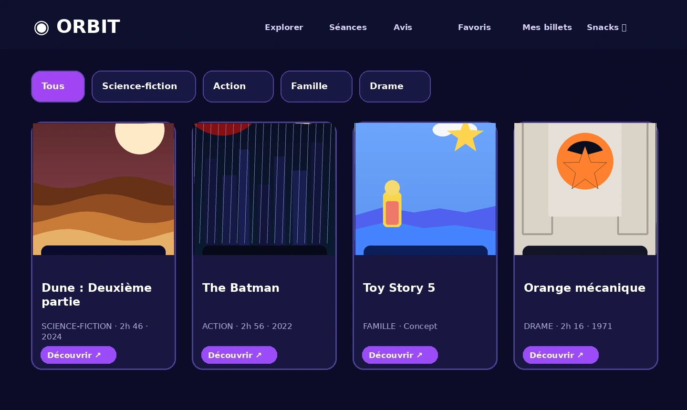
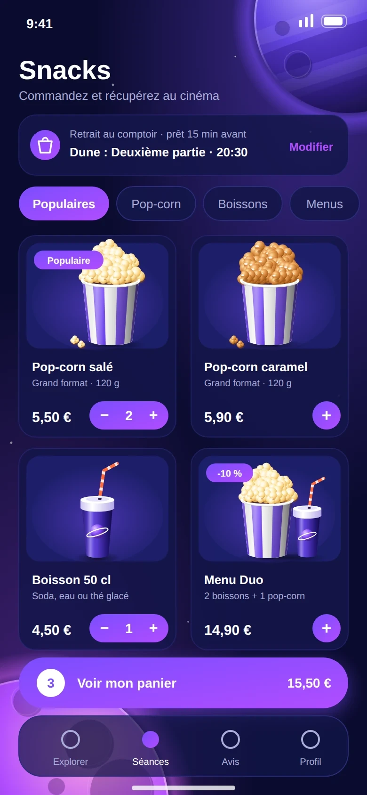

ORBIT.
Chaque film est une nouvelle planète à découvrir.
Et si une sortie au cinéma pouvait se préparer dans une seule expérience ? Films, séances, places et pop-corn réunis dans un parcours intuitif et immersif.
Concept UX/UI · Commandes et réservations simulées · Aucun paiement réel


Moins d'attente.
Plus de cinéma.
L'idée part d'un besoin simple : avant une séance, on veut savoir quoi regarder, où aller et comment gagner du temps sur place. Pourtant, les informations utiles sont souvent réparties sur plusieurs interfaces.
Orbit centralise les étapes importantes dans une expérience unique : découvrir un film, choisir sa séance, sélectionner ses fauteuils, ajouter une commande de snacks puis retrouver ses billets.
De l'envie
à la séance.
Une expérience pensée pour guider sans interrompre. Clique sur une étape pour explorer le parcours et rejoindre cet écran du prototype.
Des univers cinématographiques à parcourir et une fiche film pour préparer sa sortie.
Un univers
à part entière.
Des écrans au service de l'usage, avec une direction spatiale qui accompagne la découverte plutôt qu'elle ne la complique.

Tout découvrir.
Rechercher un film, filtrer par univers et repérer les séances depuis l'accueil.
Tout préparer.
Prévoir les snacks avant la séance pour limiter l'attente au comptoir.

Le cinéma est
un univers.
La direction artistique s'appuie sur le bleu nuit pour la profondeur, le violet pour les actions, le corail pour l'énergie et la lavande pour les détails lumineux. Les formes arrondies évoquent les trajectoires et les planètes.
Voir l'expérience en mouvement ↗Contrastes marqués, composants lisibles, petits repères cosmiques.
Prêt pour
le décollage ?
Teste le parcours du premier clic au billet de démonstration.